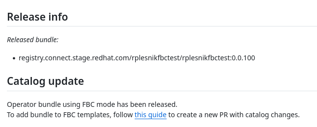

FBC workflow
If you already have an existing non-FBC operator please continue with the onboarding documentation to convert it to FBC. Once you have converted your operator, or you want to introduce a brand new operator, you can start with the FBC workflow.
FBC operator config
To indicate the operator is using fbc workflow an operator owner needs to indicate this
fact in the ci.yaml file.
Example of the ci.yaml with FBC config:
---
fbc:
enabled: true
FBC templates
File-based catalog templates serve as a simplified view of a catalog that can be updated by the user. The OPM currently supports 2 types of templates and it is up to the user which template the operator will be using.
- Basic template
- SemVer template
More information about each template can be found at opm doc.
The recommended template from the maintainability point of view is SemVer.
Generate catalogs using templates
To generate a final catalog for an operator a user needs to execute different opm
commands based on the template type. We as operator pipeline maintainers want
to simplify this process and we prepared a Makefile with all pre-configured targets.
To get the Makefile follow these steps (In case you converted the existing operator and
followed the onboarding guide the Makefile should be already in
your operator directory and you can skip the step.)
cd <operator-repo>/operator/<operator-name>
wget https://raw.githubusercontent.com/redhat-openshift-ecosystem/operator-pipelines/main/fbc/Makefile
The right place for the Makefile is in the operator's root directory
.
├── 0.0.1
│ ├── manifests
│ └── metadata
├── catalog-templates
├── ci.yaml
└── Makefile
You can modify the Makefile based on your needs and use it to generate catalogs by running make catalogs.
[!IMPORTANT] In case an operator isn't shipped to all OCP catalog versions manually update
OCP_VERSIONSvariable in theMakefileand include only versions supported by an operator.
The command uses the opm and converts templates into catalogs. The generated catalogs
can be submitted as a PR in Github and once the PR is processed changes will be released to the
OCP index.
$ tree (repository-root)/catalogs
catalogs
├── v4.12
│ └── aqua
│ └── catalog.yaml
├── v4.13
│ └── aqua
│ └── catalog.yaml
├── v4.14
│ └── aqua
│ └── catalog.yaml
├── v4.15
│ └── aqua
│ └── catalog.yaml
└── v4.16
└── aqua
└── catalog.yaml
Adding new bundle to Catalog
To add a bundle to the catalog you need to first submit the new version of the operator using traditional PR workflow. The operator pipeline builds, tests, and releases the bundle into the registry. At this point, the operator is not available in the catalog yet. To add the bundle to the catalog you need to update catalog templates and add a bundle pullspec given by pull request comment and open a new pull request with catalog changes.

SemVer
For example if I want to add v1.1.0 bundle into Fast channel of a specific catalog I'll
add it as mentioned in the example below:
---
Schema: olm.semver
GenerateMajorChannels: true
GenerateMinorChannels: true
Candidate:
Bundles:
- Image: quay.io/foo/olm:testoperator.v0.1.0
- Image: quay.io/foo/olm:testoperator.v0.1.1
- Image: quay.io/foo/olm:testoperator.v0.1.2
- Image: quay.io/foo/olm:testoperator.v0.1.3
- Image: quay.io/foo/olm:testoperator.v0.2.0
- Image: quay.io/foo/olm:testoperator.v0.2.1
- Image: quay.io/foo/olm:testoperator.v0.2.2
- Image: quay.io/foo/olm:testoperator.v0.3.0
- Image: quay.io/foo/olm:testoperator.v1.0.0
- Image: quay.io/foo/olm:testoperator.v1.0.1
- Image: quay.io/foo/olm:testoperator.v1.1.0
Fast:
Bundles:
- Image: quay.io/foo/olm:testoperator.v0.2.1
- Image: quay.io/foo/olm:testoperator.v0.2.2
- Image: quay.io/foo/olm:testoperator.v0.3.0
- Image: quay.io/foo/olm:testoperator.v1.0.0
- Image: quay.io/foo/olm:testoperator.v1.1.0 # <-- Add new bundle into fast channel
Stable:
Bundles:
- Image: quay.io/foo/olm:testoperator.v1.0.0
Also see opm doc for automate-able step.
Basic
For example, if I want to add v0.2.0 bundle into stable channel of specific catalog I'll
add it as mentioned in the example below.
- Add a new
olm.bundleentry with bundle pullspec - Add bundle into the
stablechannel
---
schema: olm.template.basic
entries:
- schema: olm.package
name: example-operator
defaultChannel: stable
- schema: olm.channel
package: example-operator
name: stable
entries:
- name: example-operator.v0.1.0
- name: example-operator.v0.2.0 # <-- Add bundle into channel
replaces: example-operator.v0.1.0
- schema: olm.bundle
image: docker.io/example/example-operator-bundle:0.1.0
- schema: olm.bundle # <-- Add new bundle entry
image: docker.io/example-operator-bundle:0.2.0
Also see opm doc for automate-able step.
Updating existing catalogs
A great benefit of FBC is that users can update operator update graphs independently of operator releases. This allows any post-release modification of the catalogs. If you want to change the order of updates, remove an invalid bundle, or do any other modification you are free to do that.
After updating catalog templates don't forget to run make catalogs to generate a catalog
from templates and submit the resulting catalog using PR workflow.